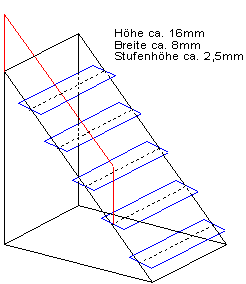

Krümelbahn
Krümelbahn Akku-Ladestation
Akku-Ladestation

Allgemeine Informationen
Diese markanten Ladestationen - umgebaute Reichsbahngüterwagen - bestimmten jahrzehntelang das Bild der jeweiligen ETA-Endstationen, und waren neben der Batterie das Herzstück eines jeden Akkutriebwagenbetriebes. Die Triebwagen wurden in den Nachtstunden an diese "Stromtankstellen" angeschlossen, bis die volle Batteriekapazität von 520V erreicht war.Ein Foto dieses Gleichrichterwagens im Drehscheibe-Sonderheft 15 sowie der Bericht im Eisenbahn-Magazin verleiteten mich zu einem Eigenbau.

Technische Daten
Literaturhinweise
- Eisenbahn-Magazin 12/89 (Seite 32ff.)
- Eisenbahn-Kurier-Spezial 12 Seite 44ff.
- Eisenbahn-Journal-Spezial I/92
- Drehscheibe Sonderheft 15 Seite 121ff.
- Miba 11/99 (Seite 96 und 97) Die Akku-Diener - ETA-Ladeanlagen des Bw Worms
- Miba 12/02 (Seite 58 bis 60) Ladeanlagen für Akkutriebwagen - Strom vom Stecker
- N-Bahn Magazin 6/16 (Seite 66 bis 73) Heulboje, Zigarre und Akkublitz - Zugbildungen mit den DB ETA 150, 176 und 177/180 in Modell
- Bahndienst- und Dienstgüterwagen, Band 1: Spezialwagen für jeden Zweck S.200ff: Stromversorgung
Industriemodelle/Bausätze
| Hersteller | Epoche | H0 | TT | N | Bemerkungen |
|---|---|---|---|---|---|
| Lemke | III | LC99150 (F) | Umformwagen 600A-Gleichrichter, Unterbringung in 3-achsigem Länderbahngüterwagen stand als Vorbild im Bw Worms, später im Bw Oberhausen. |
Bauteilliste
| Stückzahl | Benennung | Best.Nr. | Techn.Daten |
|---|---|---|---|
| 1 | G10 oder G05 |
Fleischmann 5361 Trix 23905 |
(2achsig) (3achsig, entspricht weitestgehend dem Vorbild) |
| 4 | Federpuffer | Weinert 8614 | (4er Pack) |
| 1 | Güterwagenzurüstteile | Weinert 9254 | 2 Pufferbohlen 4 Pufferplatten 2 Zettelkästen |
| 4 | Rangiertritte | Weinert 8690 | (4er Pack) |
| 2 | Übergangsbleche | Weinert 9249 | (2er Pack) |
| 4 | Signalscheibenhalter oder DB-Lampen |
Weinert 8273 oder Weinert 9019 |
(8er Pack) (6er Pack) |
| 2 | Signalhörner | Weinert 4376 | (4er Pack) |
| 2 | Arbeitslampen | Spieth Z5 oder Microlampen (1,2V/15mA, Ø 1,2mm [Conrad 720120]) |
(siehe  SchaltbildSchaltbild unten) SchaltbildSchaltbild unten) |
| 2 | Kupplungen | Weinert 8648 | (2er Pack), nicht bei Einsatz einer Fahrzeugkupplung |
| 2 | Bremsschläuche, glatt | Weinert 8290 | (4er Pack), nicht bei Einsatz einer Fahrzeugkupplung |
| 2 | Radsätze RP25 | Roco 40264 | |
| DB-Zeichen, weiß | |||
| Elektropfeile | |||
| 6 | Hochspannungsisolatoren | Sommerfeldt 407 | Spur N! |
| Messingdraht | 0,3mm; 0,5mm; 1mm | ||
| Furnierholz | |||
| Kunststoffplatte bzw. -streifen |
;){kind=link}
Baubeschreibung

ETA 5
in Betrieb seit: 08.1996
Nachdem das Modell in seine Einzelteile zerlegt und eine vorhandene Beschriftungen entfernt wurde, werden:
- am Fahrgestell:
- die Puffer abgeschnitten, an ihre Stelle werden Löcher für die Federpuffer gebohrt (Ø 2,2mm)
- Bohrungen für Rangiertritte und ggf. für die Bremsschläuche und die Hakenkupplung angebracht
- die alten Trittbretter an der Wagenlängsseite werden entfernt und durch ein gleiches Messinggestell ersetzt;
hier werden später kleine Furnierholzbrettchen aufgeklebt.
- am Wagenkasten:
- an den Stirnseiten wird zur Andeutung einer Zugangstüre zwischen die Streben in der Mitte eine dünne Kunststoffplatte geklebt
- und unterhalb der Türen die Wagenübergangsbleche montiert (befestigt man diese mittels Ösen, so bleiben die Bleche beweglich)
- die beiden Schiebetüren an der Wagenlängsseite werden fest verschlossen, zwischen die Streben auf den Schiebetüren werden wieder Kunststoffplatten geklebt - auch hier gibt es Zugangstüren.
- an einem Wagenkastenende werden Fensteröffnungen auf beiden Seiten unterhalb des Daches angebracht
- am auffälligsten sind die Dachaufbauten: sie bestehen aus zwei "Hauben" (siehe hierzu auch die Fotos' in der o.g. Literatur):
- eine Haube besitzt Lüftungsgitter an den Seiten
- die andere hat auf jeder Seite 3 Hochspannungsisolatoren
Für eine Außenbeleuchtung können 2 Microlampen angebracht werden (
Schaltbild).
Lackierung
| Farbe | Best.Nr. | Techn.Daten |
|---|---|---|
| Grundierung | Weinert 2698 | |
| Fahrgestell | Weinert 2646 | RAL 9005, schwarz |
| Gehäuse | Weinert 2629 | RAL 6020, chromoxidgrün |
| komplettes Gehäuse | Weinert 2697 | Klarlack |
Zuerst wird das Gehäuse chromoxidgrün lackiert, anschließend das Fahrgestell schwarz.
(Das Vorbild war in seinen letzten Jahren farblich sehr heruntergekommen, der Lack war an den meisten Stellen im wahrsten Sinne des Wortes "ab")
Beschriftung
| Hersteller | Epoche | H0 | TT | N | Bemerkungen |
|---|---|---|---|---|---|
| Andreas Nothaft | III | 7668 | Komplettbeschriftung für einen Umformwagen (ETA-Ladestation), DB |
Zum Schutz der Schriften sollten diese anschließend mit mattem Klarlack lackiert werden.
Nach dem Lackieren werden die Fenster (Klarsichtfolie passend schneiden) - am besten mit Klarlack - eingeklebt und das Fahrzeug wieder zusammengebaut.
Umfeldgestaltung:
- Über einen Mast (bestehend aus einem I-Profil und 3 weiteren Hochspannungsisolatoren kann eine 15kV-Einspeisung in die Ladestation nachgebildet werden (Miba 11/99, Seite 96 und 97)
- Weiterhin können am Wagen eine Außentreppe (Weinert 9339 oder Spieth 2316) aufgebaut sowie einige Ladesäulen aufgestellt werden.
- Der Wagen kann mit Hemmschuhen (Weinert 3205) abgestellt und mit einem Schwellenkreuz sowie Sh2-Signalen abgesichert werden
- zur Gleisfeldbeleuchtung kann z.B. eine Gleisfeldleuchte (Weinert 3322) eingesetzt werden.
;){kind=link}

Außentreppe